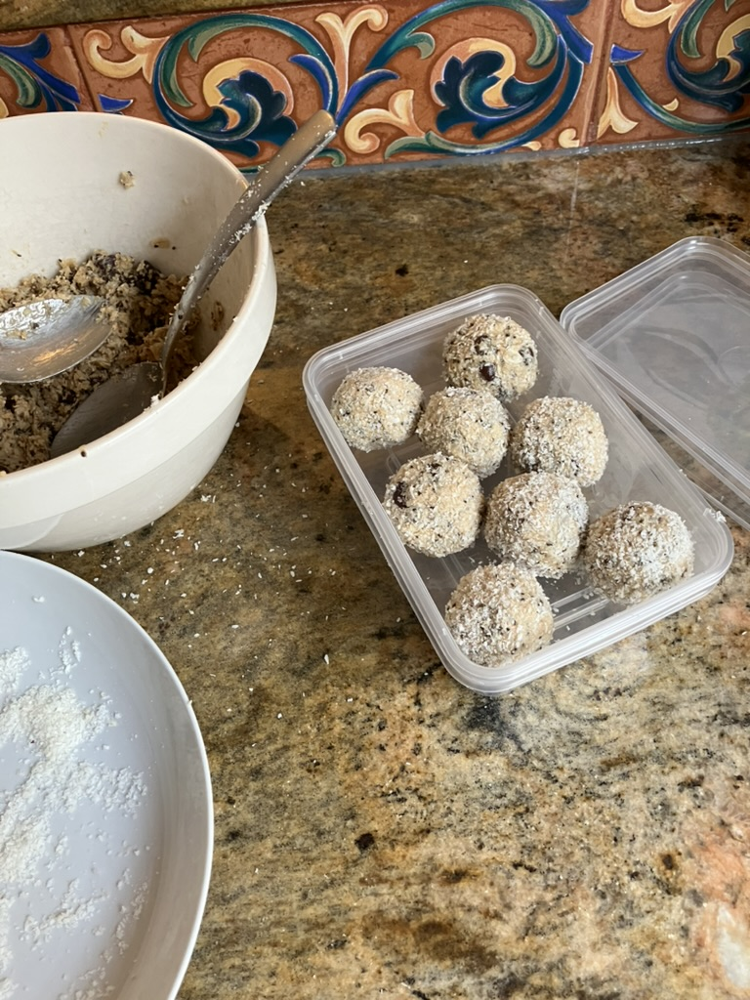

Protein Balls
Home

Description
These protein balls are bloody tasty.
Not too savoury, not too sweet, just right!
Ingredients
- 1 1/2 cups (150g) organic rolled oats
- 3 tablespoons chia seeds
- 4 tbsp (55g) melted and cooled coconut oil
- 1 teaspoon vanilla extract
- 1/3 cup (70g) mini dark chocolate chips
- 40ml (50g) runny honey
- 1/2 cup (175g) cashew butter
- Desiccated coconut - to coat
Steps
- Mix oats and chia seeds in a large bowl.
- Mix coconut oil and vanilla extract, then add and mix well.
- Mix the chocolate chips through, then mix the honey in well.
- Work the cashew nut butter through the mix until all ingredients are well distributed.
- Scoop out heaping tablespoons of mixture and form into rough balls by a light roll between your fingers.
- Coat each ball in desiccated coconut then roll and press between your hands to compress into well shaped balls.
- Roll in desiccated coconut again so the outsides are mostly dry.
- Serve right away, or store in an airtight container. (These will keep in the refrigerator for five days or room temperature for two days.)